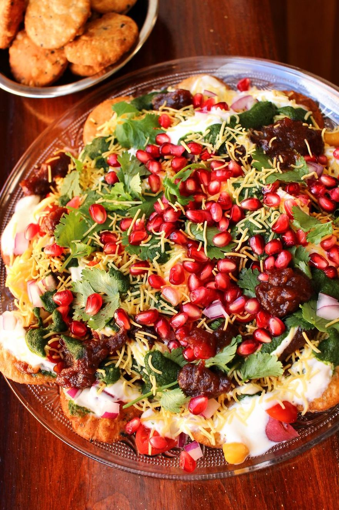

Papdi Chaat

Papdi chaat is a popular North Indian street food snack filled with a variety of mouth-watering textures and flavors. Papri Chaat includes chickpeas, potatoes, various chutneys, yogurt, papdi, curd, sev and is garnished with coriander.
Ingrediants ~
1/4 c. ghee or butter
1/2 tsp. ajwain seeds
1/2 tsp. nigella seeds
1/2 tsp. cumin seeds
1 1/2 tsp. white sesame seeds
1 1/2 tsp. black sesame seeds
1/2 c. whole-wheat flour
1 1/2 c. all-purpose flour
1 pinch salt to taste
3/4 tsp. black salt
6 to 8 tbsp. water
Steps ~
In a medium pan over medium-low heat, melt ghee. Add in seeds and toast, swirling pan occasionally until white sesame seeds are lightly golden, about 1 minute. Remove from heat and let cool.
In a large bowl, mix together flours and salt. Stir in cooled ghee mixture and use your fingers to work the ghee evenly into the flour mixture.Stir in water and knead into a cohesive ball of dough. Cover and let rest for 30 minutes to 1 hour.
Halve dough, then roll each piece to about ⅛” in thickness. Prick dough all over with a fork, then cut out rounds using a 2” cookie cutter. Transfer to a baking sheet or large plate lined with parchment. Repeat with remaining dough. Reroll all scraps together into another sheet to punch out more rounds (or fry as is for snacking!).
Meanwhile, in a large pot on medium heat, heat 1” of vegetable oil to between 350° and 375°.
Being sure not to overcrowd the pan, fry papdi in batches, stirring occasionally, until evenly golden, about 3 minutes. Reduce heat to low if papdis are turning dark gold too soon. Transfer to a paper towel-lined plate and repeat with remaining papdi.